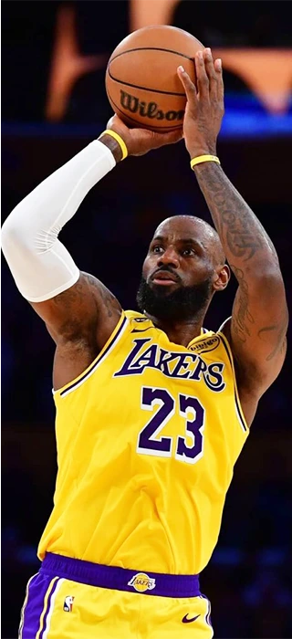
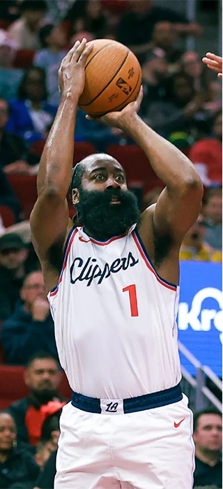
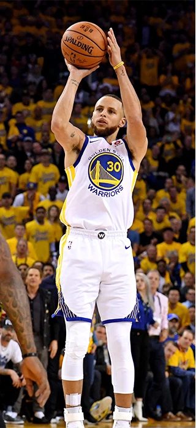
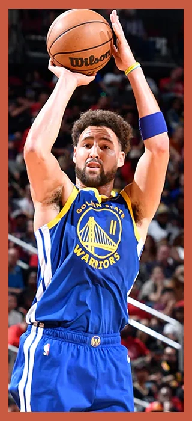
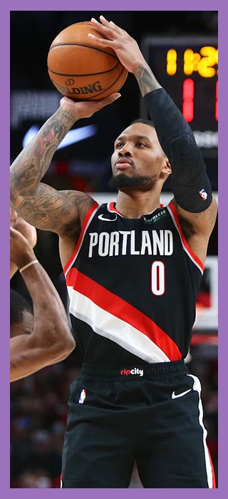
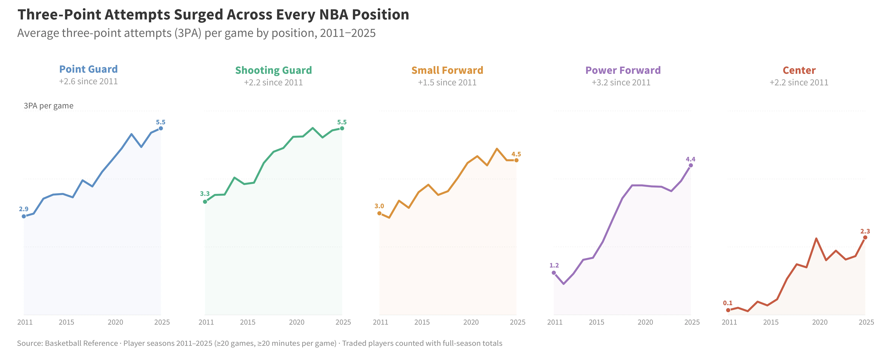
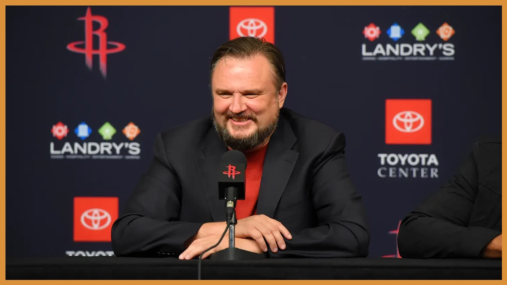
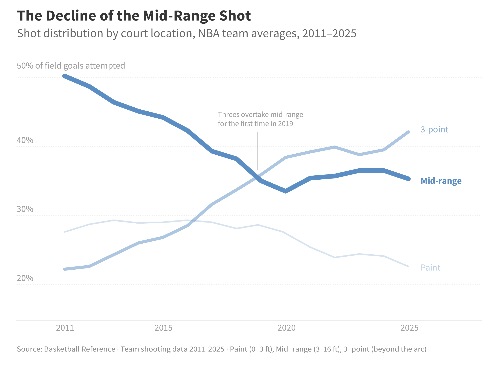
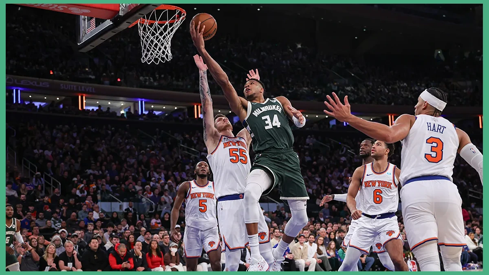
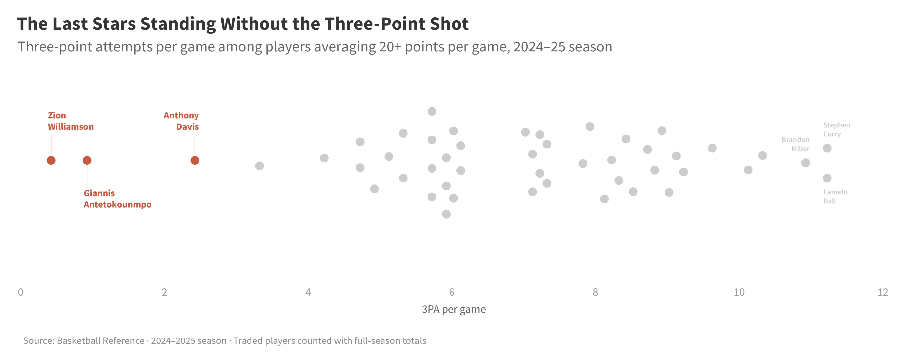

In the 2010–11 NBA season, the average center attempted 0.1 three-pointers per game. By 2025, that number had risen to 2.3. But centers were not alone. Every position on the court, from point guard to power forward, followed the same trajectory, reshaping how the game is played at every level.

The shift was not random. It was driven by a growing wave of analytics that reshaped how front offices thought about every shot on the court.
Starting in the early 2010s, analytics departments across the league began studying shot efficiency in granular detail. The finding was straightforward but uncomfortable: the mid-range jump shot — the pull-up from 18 feet, the fadeaway from the elbow, the shot that defined generations of NBA stars — was statistically the worst shot in basketball. A mid-range attempt converted at 40% produces 0.80 points per shot. A three-pointer made at just 35% produces 1.05. Over hundreds of possessions per game, that gap compounds into wins and losses.
No one internalized this logic earlier or more aggressively than Daryl Morey, then-general manager of the Houston Rockets. A former management consultant with no playing background, Morey rebuilt the Rockets' entire offensive philosophy around eliminating the mid-range and replacing it with threes, layups, and free throws. The approach, nicknamed "Moreyball," initially drew skepticism. Within a few years, nearly every front office in the league had adopted some version of it.

However, analytics alone did not create the revolution. Rule changes had been quietly tilting the court in favor of perimeter players for years. In 2004, the NBA eliminated hand-checking, a defensive technique that allowed defenders to physically impede ball-handlers with their hands and forearms. The change made it far easier for quick guards to drive and operate on the perimeter. Combined with the defensive three-second rule, which prevented bigger and taller players from camping in the paint, the league had structurally created more open space on the floor — space that three-point shooters could exploit.
The result was not just more threes, but fewer of everything else. Teams made a deliberate trade: as three-point attempts climbed, mid-range twos fell. Shots near the basket remained relatively stable, because close-range attempts are still the most efficient shot in basketball. But the mid-range, the territory between the paint and the arc, was systematically abandoned. By 2019, three-point attempts overtook mid-range attempts for the first time.

By the late 2010s, the transformation was structural. Every position, every team, every offensive scheme had been reorganized around the three-point line. Notably, no player came to define that new reality more than Stephen Curry. His range and volume from beyond the arc powered the Golden State Warriors to three championships between 2015 and 2022, and his success reshaped what every team looked for in a roster. Today, nearly every star in the league has built the three-point shot into the core of their game. Players like Luka Dončić, Jayson Tatum, and Shai Gilgeous-Alexander all attempt six or more threes per game while averaging over 20 points.
And yet, a handful of the league's best players never followed.

Giannis Antetokounmpo won two MVP awards and a championship getting to the rim. Zion Williamson, one of the most physically dominant players of his generation, attempts fewer threes per game than most role players. Anthony Davis, a perennial All-Star and former champion, built his career in the post and around the paint. In an era now defined by the three-point shot, they remain elite scorers without it.

The three-point revolution did not just change how teams design their offenses or how coaches draw up plays. It changed what it means to be a star in the NBA. The skills that once defined greatness — the post-up game, the mid-range fadeaway, the ability to score from the elbow — have been replaced by a new baseline requirement: you shoot threes, or you are the exception.
But there are signs the revolution may have overshot its target. A 2024 study by Syracuse University researchers found that while three-point attempts keep climbing, the average expected value of a three-pointer has actually fallen below that of a two-pointer since the 2017–18 season. In other words, the league collectively pushed so far toward the three-point line that the math which started the revolution no longer supports it. Too many players are taking too many threes from too far out, and the efficiency advantage that once justified the shift has eroded.
The three holdouts at the bottom of the chart may look like relics of a bygone era. But if the numbers keep moving in this direction, they might turn out to be ahead of the curve.
All player statistics were sourced from Basketball Reference, which publishes official NBA data licensed from Stats LLC, the league's official data provider. Data covers the 2010–11 through 2024–25 NBA seasons. Player-level data includes per-game statistics for all players meeting minimum thresholds of 20 games played and 20 minutes per game. Traded players are represented by their full-season totals. Shot distribution data (paint, mid-range, and three-point zones) comes from Basketball Reference team shooting tables.